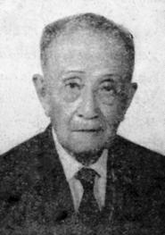

Hoài niệm danh nhân cận đại của Sa-Đéc, quyết là không ai đáng kính mến bằng ông Lưu-Văn-Lang. Học lực uyên thâm, khí tiết cao trọng. Ông nêu gương sáng cho đoàn hậu tấn và để danh thơm muôn thuở.

Bức di ảnh sau cùng của Ông Lưu-Văn-Lang
Ông Lưu-Văn-Lang chào đời tại làng Tân-Phú-Đông, Sa-Đéc ngày 5 tháng sáu 1880. Thân phụ ông là Lưu-Văn-Cứng. Thuở trẻ, ông học chữ nho. Đến 10 tuổi, ông mới bắt đầu học chữ Pháp và quốc-ngữ. Thông minh vốn sẵn tính trời lại thêm có lòng hiếu thảo với cha mẹ, ông cố gắng học các bạn tác cùng trang lứa. Chăm chỉ học tập chuyên cần. Chẳng mấy năm, ông vào học ở trường Trung-hoc Chasseloup-Laubat tại Sài-Gòn.
Năm 17 tuổi, tài học của ông áp đảo bạn đồng môn. Được cấp học bổng của Chính-phủ Pháp, qua Paris học trường Cao-đẳng ở trung-tâm Thủ-đô Pháp-quốc.
Năm 1904, thi ra trường, ông đậu hạng 8 trong số 250 thí sinh. Ông nghiễm-nhiên là vị Bác-vật (Kỹ-sư) Ingénieur des Arts et Manufactures de l'École Centrale de Paris, có người dịch là Trường Kỹ-nghệ Trung-ương hay là Trường Quốc-gia Bách-công Trung-ương.
Ông về nước, ba chữ "Bác-vật Lang" truyền tụng khắp trong xứ.
Đầu tiên Chánh-phủ Pháp bổ nhiệm ông lên Vân-Nam lo thiết lập đường xe hỏa. Rồi đến năm 1909, ông về giúp việc trong sở Công-Chánh Sài-Gòn đến năm 1940.
Trong năm 1933, ông đảm nhận chức vụ "Hội-viên Hội-đồng Danh-dự và Cố-vấn" cho đến năm 1942.
Sau cuộc đảo chánh của quân đội Nhật ngày 9 tháng ba 1945, trao trả chủ- quyền cho Hoàng-đế Bảo-Đại, nội các đầu tiên do cụ Trần-Trọng-Kim thành-lập, có vời ông và ông Hồ-Tá-Khanh ra Huế đảm nhận chức vụ Tổng-trưởng. Rồi cuộc biến cố xảy ra trên đất nước, ông giữ khí tiết, không hợp tác gì với người Pháp.
Tài năng của ông từng khiến các vị kỹ-sư người Pháp đều phải thán phục(1). Đức độ và tâm chí của ông được hầu hết các nhân-sĩ trọng vọng khâm-phục.
Con người có tài có đức, hẳn là trời đất ưu ái, dành cho đầy đủ Phước-Lộc-Thọ. Vợ chồng ông sinh ra rất đông con cái, đều khỏe mạnh, thông minh. Trong năm 1930, bộ Lao-Động và Vệ-Sinh bên Pháp ban thưởng huy chương bạc cho phu nhân của ông về sự sinh dưỡng 9 người con đều dồi dào sức khỏe. Tuần báo "Phụ-nữ Tân-văn" trong năm 1930 ấy, số 49, có đăng lời ca ngợi và hình chụp vợ chồng con cái ông.
Cũng trong năm 1930, tuần báo "Phụ-nữ Tân-văn" có mở một cuộc thi kỷ niệm đệ nhất châu niên của tờ báo. Đầu đề thứ ba của cuộc thi là một câu hỏi như sau: "Nếu có cuộc tuyển cử 10 vị Việt-Nam nhân dân đại biểu (như Dân-biểu, Nghị-sĩ ngày nay mà những vị kể tên dưới đây (tờ báo nêu tên 10 vị nhân-sĩ lúc ấy) ra ứng cử thì độc giả sẽ cử những vị nào?".
Kết quả cho thấy là ông được bầu hạng năm sau Phan-Văn-Trường, Huỳnh-Thúc-Kháng, Nguyễn-Phan-Long, Diệp-Văn-Kỳ và trên Bùi-Quang-Chiêu, Trần-Trọng-Kim, Dương-Văn-Giao, Trần-Trinh-Trạch và Phạm-Quỳnh. Ngoài ra ông cũng là một trong số ba vị sáng lập viên Việt-Nam Ngân-Hàng đầu tiên. Ba vị ấy gồm các vị Huỳnh-Đình-Khiêm, Trần-Trinh-Trạch và Lưu-Văn-Lang.
Xem như thế, đủ rõ uy tín của ông trong nhân dân là ngần nào. Năm 1954, vì nhiệt thành yêu nước, ông tham gia phong trào Hòa bình với địa vị chủ tịch danh dự, thuộc Ủy-ban Hòa-bình Sài-Gòn, ông bị chánh quyền Ngô-Đình-Diệm bắt giữ trong đợt thứ nhất vào tháng 11 năm ấy, cùng với ông Michel Nguyễn-Văn-Vỉ là bạn đàn em chí thân của ông. Theo G. Chaffard trong quyển "Les deux guerres du Việt-Nam", ông từ trần ngày 3-8-1969, thọ 90 tuổi.
Tài cao, đức trọng, danh thơm, gia đình phước lộc, thọ mạng lâu dài, đời Bác-vật Lang quả là hi hữu.
Ông mất đi, các báo đều đăng tin và tỏ niềm trọng vọng thương tiếc vô hạn.
Báo "Đuốc Nhà Nam" ngày 8-8-1969, chủ nhiệm là ông Trần-Tấn-Quốc viết một bài đăng ở trang nhất, nơi danh dự với nhan đề: "Kính điếu cụ Lưu-Văn-Lang, một sĩ-khí miền Nam", lời lẽ vô cũng cảm xúc và chân thành rất mực. Chúng tôi xin sao lục ra đây để tưởng niệm một bậc thiên tài, một hạng người có khí tiết:
"Kính điếu cụ Lưu-Văn-Lang
"Một sĩ-khí miền Nam
"Chúng tôi băn khoăn mãi trước cái chết của cụ Lưu-Văn-Lang. Kéo nhau đến lạy trước linh cữu cụ, chưa nói hết được lòng kính trọng của mình đối với cụ. Đăng tin chia buồn trên báo, dù trình bày trang trọng cách nào, cũng có vẻ thường tình quá.
"Thôi thì, vốn con nhà báo, sẵn giấy mực trong tay, xin kính điếu cụ Lưu-Văn-Lang bằng một bài báo.
"Khi người Pháp trở lại, muốn tái-chiếm Việt-Nam, trước hết họ nghĩ ngay tới những người thượng lưu trí thức do họ đào tạo, trong số đó cụ Lưu-Văn-Lang là người số một, được họ lưu ý tới.
"Cụ xuất thân nhà nghèo, thi đổ được vào học bổng ở một trong những trường danh tiếng nhất, đậu kỹ-sư Arts et Manufactures làm việc tại sở Trường-tiền, đã tỏ ra thanh-liêm, mẫn cán, tài năng suốt một đời công chức của cụ. Cụ về hưu-trí sau khi đã đóng góp rất nhiều trong việc kiến thiết xứ sở.
"Người Pháp cho rằng họ đã đào tạo được một nhân tài bản xứ và họ có quyền đòi hỏi ở nhân tài đó một sự cộng tác cần thiết hơn: một công tác chính trị.
"Nhưng cụ Lưu-Văn-Lang đã khẳng khái từ chối. Cụ nói: "Tôi già rồi, không làm đầy tớ cho ai được nữa".
"Cụ nói thế, là vì cụ nghĩ rằng cụ không mắc nợ gì với người Pháp. Họ muốn đào tạo một người giúp việc cho họ về chuyên môn và kỹ-thuật, nhưng do thiên tư của cụ mà cụ đã thành đạt trên ý muốn của họ. Đồng lương mà người ta trả cho cụ không xứng đáng với những công việc cụ đã làm. Vả lại cụ phục vụ xứ sở hơn là làm việc cho Tây. Cụ không mắc nợ ai cả, không ai có quyền lợi dụng cụ, để mưu toan trở lại đô hộ đất nước của ông cha.
"Cụ không phải là một nhà cách mạng. Cụ không bằng lòng người ta gọi là một nhà chí-sĩ. Cụ không thích làm chánh trị. Nhưng cụ thực tâm yêu nước và rất có cảm tình với những ai đã dám hy sinh cho nước. Do đó mà suốt trong thời kỳ kháng chiến chống Pháp, cụ tuyệt đối không hợp tác với kẻ xâm lăng, không nhận lãnh một chức vị gì trong những Chánh phủ bù nhìn do thực dân tạo dựng. Mỗi lần họ mời cụ là cụ từ chối với những câu trả lời lên trên. Chẳng những thế, cụ còn ký tên vào những bản kiến nghị đòi Pháp trả độc lập cho Việt-Nam, và phải chấm dứt cuộc chiến tranh nhơ bẩn do thực dân Pháp gây nên. Thực dân Pháp giận cụ nhưng vẫn nể cụ. Những người Pháp dân chủ kính trọng cụ và một mực thương yêu cụ. Giáo-sư PRÉTON, Hội-Trưởng Hội Nhân-quyền là một người bạn thân của cụ, coi cụ là một điển-hình của lòng yêu nước, một tinh-hoa của dân-tộc Việt-Nam, đặc biệt là của miền Nam nước Việt.
"Thật vậy, Sĩ-khí của Miền Nam có thể tượng trưng ở cụ, ở những người như cụ.
"Mấy năm về trước, cụ thường mặc quần ống cụt, chống gậy đi bộ trên những đường phố lớn Thủ-đô, còn hiên ngang mạnh khỏe.
"Gần đây, cụ mặc quần ống dài, vẫn chống gậy đi bộ, nhưng lưng đã hơi khòm và có vẻ mệt nhọc. Chỉ thiếu mười năm, cụ đã sống một thế kỷ, một thế kỷ vọng quốc và phục quốc.
"Có những người đã đổi tiết tháo chạy theo những biến chuyển của thời cuộc. Có nhiều người lợi dụng thời cuộc để vinh thân phì gia. Họ buôn dân bán nước mà họ vẫn cho là thức thời.
"Trái lại, cũng có những anh hùng liệt-sĩ làm vẽ vang cho dân tộc.
"Nhưng ở thời loạn, làm anh hùng dễ hơn làm quân tử. Do đó mà chúng tôi kính trọng cụ Lưu-Văn-Lang, vẫn thường lấy cụ làm gương trong đạo tu thân xử thế.
" Cụ từ trần ở tuổi 90, không có gì phải ân hận, chỉ tiếc rằng sau khi cụ ra đi, khó kiếm được người quân-tử như cụ.
"Tên cụ đáng ghi vào lịch-sử và đáng được thay thế cho nhiều tên đường phố ở Thủ-đô.
"Chúng tôi cầu chúc anh-linh cụ sớm tiêu diêu nơi cực lạc và xin thành thật chia buồn cũng tang gia, xin chia sớt những ai đã âm thầm tiếc thương người tượng trưng sĩ-khí miền Nam đã ra đi...
Đuốc Nhà Nam, ngày 8-8-1969
Chú thích:
[1] Danh từ Bác-Vật khi xưa trong Nam thường gọi những vị Kỹ sư từ Pháp về, do đó chúng tôi xin dùng danh từ cũ để tưởng niệm tiền bối cao học.
[2] Xin xem thêm ở phần giai thoại, để rõ hơn về tài năng của ông Bác-vật Lưu-Văn-Lang.